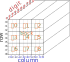

数独の制約
数独の問題は、9x9の枡に、1～9の数字を 行・列・3x3ブロック に過不足なく1つづつ配置する ことです。

数独の制約に関して、次のようなことが言えます。
- 数独には、行・列・ブロック・数字の制約があります。
- 行と列は独立した制約です。行とブロック、列とブロックは独立していません。
- セルに配置する数字1～9は、制約です。 多くのアルゴリズムは、表面的には数字の制約は意識しませんが、 行・列・ブロック・数字の4つの制約を(ほぼ)同等に扱うアルゴリズム(General Logic)もあります。